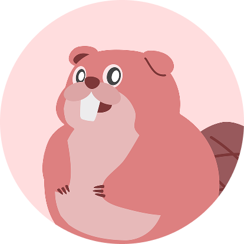
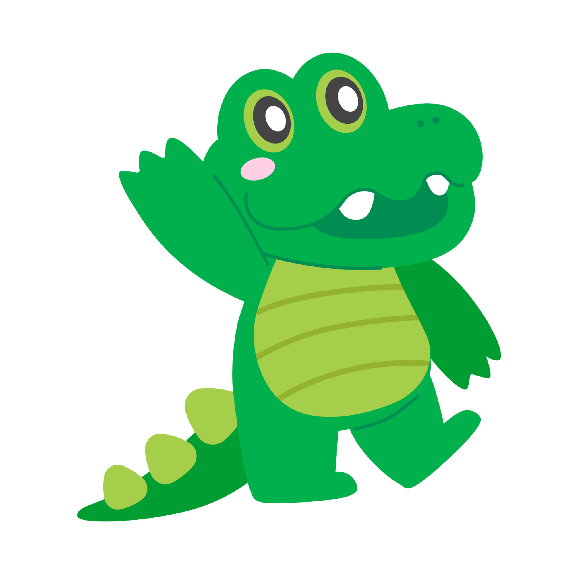
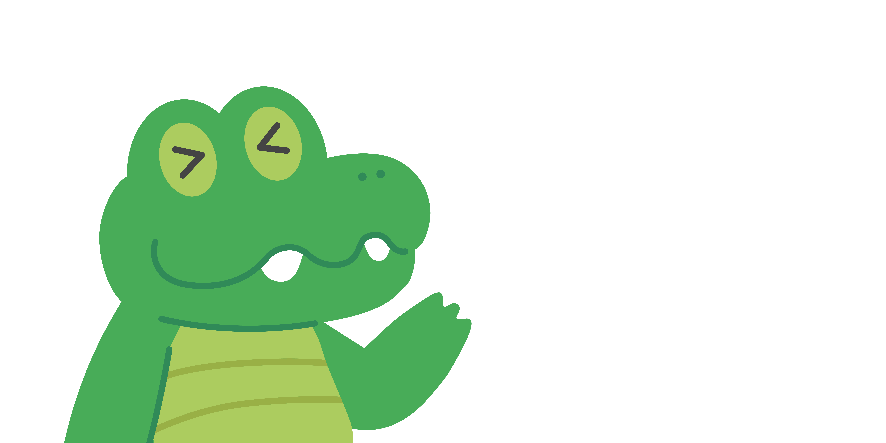
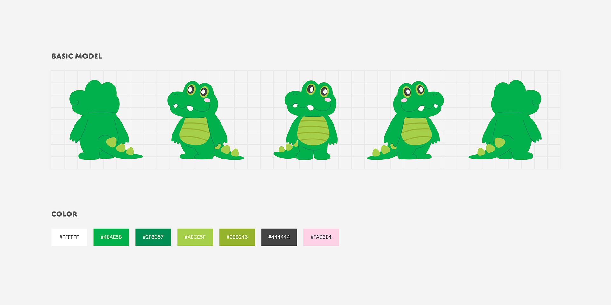
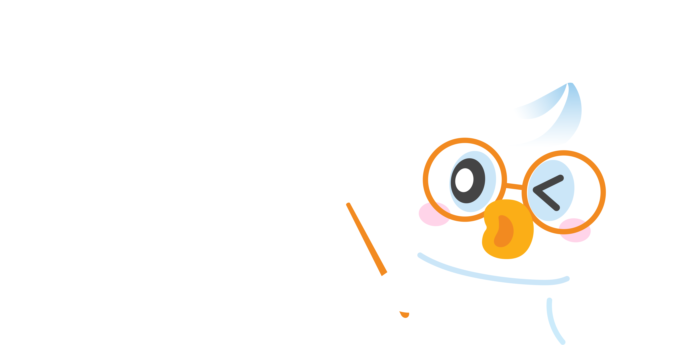
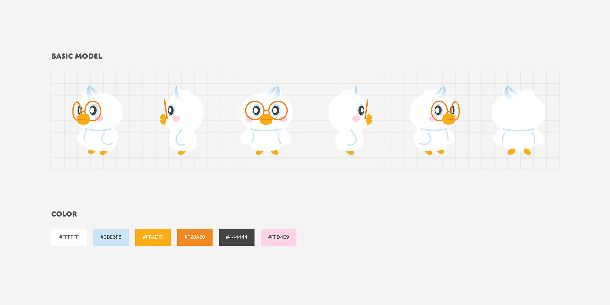
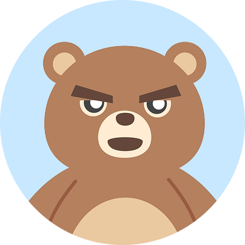
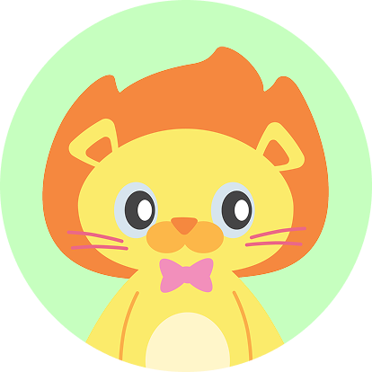
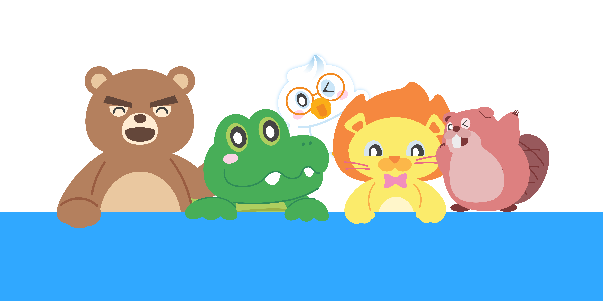

SCROLL DOWN
양치별을 지키는 수호대원
아푸와 치카는 올바른 양치 습관을 돕는 양치별의 친구들이에요.
두 친구와 함께 양치별을 지키며, 쉽고 즐겁게 올바른 양치 방법을 배워요.


용감한 양치별의 리더아푸
아푸는 양치별을 지키는 든든한 리더예요.
밝고 친근한 성격으로 아이들의 양치 모험을 도와줘요.
위기 상황에서는 침착하게 문제를 해결하고,
양치별 친구들과 함께 치아 건강을 지켜나가요.

똑똑한 양치별 박사님치카
치카는 양치별의 똑똑한 박사님이에요.
어려운 이야기도 아이들의 눈높이에 맞춰
쉽고 재미있게 알려줘요.
아이들이 양치를 즐겁게 따라 할 수 있도록 도와줍니다.



양치별 친구들


양치별 이야기
보러가기
아푸치카와 함께
수호대원이 되어보아요!
